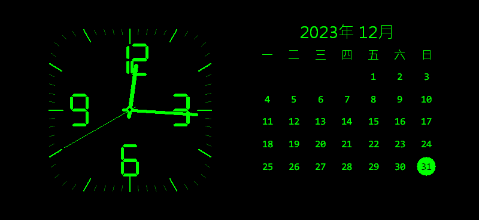
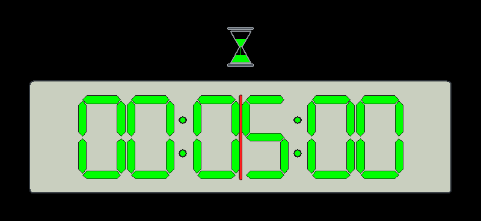

01
標準桌曆暨時鐘模式
指針鐘與六列月曆置中呈現，四周留白。鐘面 12／3／6／9 縮小 25% 並略向內收，避免與刻度相黏；保留連續指針與清楚的今天標示。
Windows 10 x64 · v0.8.0
Windows 螢幕保護程式，提供標準桌曆暨時鐘、離機作業番茄鐘與日本旅行三種模式。 桌曆時鐘與番茄鐘收進螢幕中央，鐘面數字更精巧；日本旅行改用擬真機艙與列車窗景，每個螢幕獨立播放，來源可按分鐘切換或保持不切換。

Windows 10 x64 的建置、56 個程式測試、19 個安裝判斷測試與非互動 smoke 已通過；實際雙螢幕影片播放與長時間觀察尚未在遠端工作階段執行。 需要 UAC 的完整安裝矩陣未在遠端工作階段執行，Windows 11 也尚未驗證。 下載後請先核對 SHA-256；Windows 可能顯示未驗證發行者或 SmartScreen 提示。
DISPLAY MODES
01
指針鐘與六列月曆置中呈現，四周留白。鐘面 12／3／6／9 縮小 25% 並略向內收，避免與刻度相黏；保留連續指針與清楚的今天標示。

02
數字、沙漏與進度線集中在螢幕中央，縮小面板但保持易讀；最後十秒警示，歸零閃爍四次。
03
可選「自在飛行」或「列車旅行」的擬真場景，完整 16:9 影片放在窗景中，外側標示目前地區。預設每 1 分鐘隨機切換，可改為 1～1440 分鐘或「不切換」。
以上為專案原創 AI 靜態素材，描繪虛構機艙與列車，並非特定機型或列車照片。本站不載入第三方影片。
桌曆時鐘與番茄鐘使用中央 64% 寬、60% 高的內容區；小型預覽保留易讀比例。
桌曆時鐘與番茄鐘不連網；只有全螢幕日本旅行模式會連線至 tw.live 與 YouTube。
每個螢幕各自播放、輪換來源並顯示城市與連線狀態。某個來源失效時，該螢幕切換或重試；播放器無法啟動時顯示明確提示。播放螢幕越多，網路與系統資源用量也會增加。
DOWNLOAD
選擇安裝程式，或直接取得獨立 .scr 與校驗清單。
檔案由本站直接提供，無需 GitHub 帳號、登入或雙因素驗證。
INSTALL
下載 Setup 與 SHA256SUMS.txt，以 PowerShell 的 Get-FileHash 核對 SHA-256。
Setup 需要系統管理員權限，將 .scr 安裝到 64 位元 System32，並檢查與補裝日本旅行模式需要的 WebView2 Runtime。
在 Windows 螢幕保護程式設定選取本程式，再調整模式、旅行場景、來源切換分鐘、顏色、字型與等待時間。
已偵測到電腦層級 Runtime 時，Setup 顯示版本並略過安裝；缺少時預設使用內附的 Microsoft 官方 Evergreen Bootstrapper，連網下載並靜默安裝完整 Runtime，完成後再次確認。
只使用日期時鐘與番茄鐘，可取消 WebView2 選項。網路或公司原則造成安裝失敗時，Setup 會顯示錯誤，可重試或返回取消；若要求重新啟動，請重啟後再執行 Setup。
只有個別帳號安裝 Runtime 時，Setup 仍提供電腦層級安裝，讓所有使用者都能使用。只下載獨立 .scr 時，則需自行準備 Runtime。
Runtime 由 Microsoft 提供，依其相關條款使用；安裝時會連線 Microsoft 伺服器。它是共用元件，解除安裝本程式會保留 Runtime。
Microsoft WebView2 部署說明 →原生設定畫面可選「不切換」或 1～1440 整數分鐘，預設每 1 分鐘。每個螢幕在影片實際播放後開始計時；不切換時停止定時輪換與下一來源預抓，來源失效仍會自動復原。
按下「確定」才保存，於下次啟動時套用；取消不會變更偏好。設定與預覽使用內附場景圖片，不連網，並保留「KOMSMOS TOOLKIT 探真拓知酷」標示。
UNINSTALL
使用 Setup 安裝的版本，可從 Windows「程式和功能」移除。
退出螢幕保護程式與預覽／設定視窗。從開始功能表搜尋「變更螢幕保護程式」，改選「無」或其他項目，再按「套用」。共用電腦的其他使用者也需各自變更。
按 Win + R，輸入 appwiz.cpl 並按 Enter，在清單中找到 tools-screensaver-tzk。
選取本程式並按「解除安裝」，依精靈完成。移除需要系統管理員權限，Windows 可能要求 UAC 確認；若要求重新啟動，請依提示完成。
解除安裝會移除已安裝的 .scr，但不會自動變更各帳號的螢幕保護選項。只刪除下載的 Setup 檔不會解除安裝。
先完成步驟 1，再刪除自己放置的 tools-screensaver-tzk.scr。若曾手動複製到 System32，請用檔案總管刪除 %WINDIR%\System32\tools-screensaver-tzk.scr；需要系統管理員權限。這類版本通常不會列在「程式和功能」中。
解除安裝會保留這些資料，方便重新安裝後沿用。若要清除，請先完全退出程式，再以需要清理的使用者帳號操作；清除後會失去該帳號的已儲存偏好與快取。
Win + R，輸入 regedit，找到 HKEY_CURRENT_USER\Software\tools-screensaver-tzk；可先匯出備份，再只刪除這個機碼。%LOCALAPPDATA%\KOMSMOS，只刪除其中的 tools-screensaver-tzk 資料夾，移除 WebView2 profile、快取與本機 player shell。Microsoft Edge WebView2 Runtime 是共用元件，解除安裝本程式不需要移除它。
COMPATIBILITY
22H2 build 19045 的建置、56 個程式測試及 19 個安裝判斷測試；40 張 GDI 圖片重新匯出，含縮小鐘面數字、擬真旅行場景與狀態文字；影片播放仍待實機驗證。
遠端測試刻意不顯示 UAC，也不寫入 System32。
目前沒有 Windows 11 開發環境，保留為後續相容性驗證。
OPEN SOURCE
Rust 1.97.1、Win32/GDI、WebView2、Inno Setup 6.7.3。遠端驗證只執行不顯示 UI、不安裝、不觸發 UAC 的測試路徑。